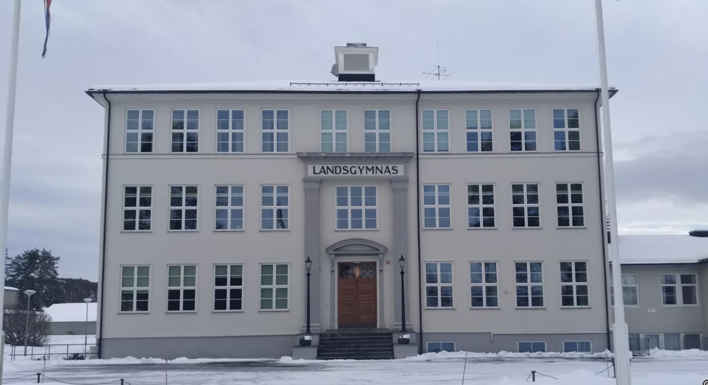

Noko av det ein opplever ved Hornnes landsgymnas
Bibliotek | Latin | Hornnes | Deiger
Hornnes landsgymnas har fleire namn i tillegg til det offisielle. Stundom vert det kalla "geni-anstalten", fordi det vanlegvis blir oppnådd gode resultat til examen artium, men namnet elevane sjølve nyttar er mindre smigrande. - Det er rett og slett "anstalten". Dette har truleg oppstått fordi gymnasiebygningen mest av alt liknar eit fengsel. Ein gusten, firkanta, raudgul murbygning, som ser utruleg trist ut. At arkitekten har freista seg med nokre krusedullar her og der, og freista å få til ein klassisk fasade hjelper lite, særleg når murpussen flagnar både her og der. Men no blir det reparert, så det vil vel hjelpe litt.
Inngangsdøra er så tung at det er rart ikkje helserådet har gripe inn, av omsyn til dei minste og veikaste, og når ein først er innforbi er det som å kome inn i Dovregubbens hall. Det ljomar mellom veggene når prat, lått og trampande føter kvar morgon kl. 8 bryt den opphøgde ro som har kvilt over desse heilage haller, sidan siste urokråkene forlet dei ettermiddagen før. Men trass i alle vondorda når det gjeld utsjåanden, så trur eg alle som har vore elevar ved Hornnes landsgymnas på ein måte er glade i den stygge, gode, gamle "anstalten", og atmosfæren som rår der. Det er rart med det, når ein slit pultane i fire år på same staden, og har sitt arbeidsområde innan det som vert diktert innanfor dei før nemnde fire gustengule veggene, så har ein mange minner når dei fire åra omsider tek ende.
Både gode og mindre gode minne, vonbrot og glede som løn for strevet, keisame eller morosame timar, alt etter som ein liker eller missliker faga, og etter som lærarane kjem utav det med stoffet og elevane. Det kan vere ein blåmandag når augene trugar med å falle att kvar augenblink, eller i ein pussig episode som får låtten til å ljome i klassen. Eller kanskje eksamensdagar, når ein sit og sveittar over oppgåvene, og augo rett som det er tek seg ein tur ut gjennom vindauga til dei høge, slanke furutrea og dei vakre bjørkene med ein gløtt av blå himmel over. Jo, det er mangt å minnast, og ein veks og mognar på.
Den som har kome seg gjennom det nålauga som heiter opptakingsprøve, og dermed er blitt elev ved gymnaset, gjer klokast i å spytte i hendene, eller ein skulle kanskje seie, slikke på fingrane, og ta bøkene fatt. For det er ikkje lite pensum ein skal igjennom på fire år, og det vert ofte sagt at det er verre å kome velberga ut enn det er å sleppe inn.
Førsteklassingane vert kalla stink, og må som slike tole mye spit frå dei høgare klassane. Som fylgje av oppnamnet får dei skulda for det meste av vondlukta på og omkring skulen, enten ho stammer frå kloakk eller eksperiment i ein kjemitime, og det må alltid luftast godt ut når "stinken" har vore i eit klasserom før andre klassar kan nedlate seg til å ta det i bruk. Dessutan må desse stakkarane - som hardast saknar mors kjøttgryter - vente til sist i matkøen, for ifylgje tradisjonen har fjerdeklassen rett til å forsyne seg først, og så fylgjer dei andre i tur og orden. Den som freistar å lure seg fram, blir fort skyssa attende dit han rettmessig høyrer heime. Og ikkje nok med det, rett som det er finn "stinken" ytterkleda bundne saman når dei kjem ut frå ein time, og stundom er dei fletta saman til eit fantasifullt taug som heng frå øvste etasje og endar i kjellaren. Særleg andreklassingane har moro av slike fantestrek, som hemn for fjordåret, men dei andre er heller ikkje borte. Alt dette hindrar sjølvsagt ikkje at gutane frå dei meir "avanserte" klassane ved første høve interessert mønstrar jentene blant "stinkdyra", for å sjå om der er nokon som kjem til å friske opp det kvinnelege innslag ved skulen. Som oftast er der ein del som finn nåde for deira kritiske augo, og desse får gjerne umelde visittar når haustmørket gjer det trygt å ferdast på "krigsstien". For det står ikkje i skulens teikn alt ein gymnasiast tek seg føre. Rundt på hyblane vert det brygga saman litt av kvart, både planar og anna brygg. Sjølvsagt tek skulearbeidet det meste av tida, men litt fritid og moro unner dei fleste seg likevel. Sume kastar seg over bøkene straks dei kjem heim frå skulen, så har dei kvelden fri. - Andre kviler først, og tek heller kvelden og natta til bruk, stiver seg opp med kaffe og nikotin, og lever det "ideelle studenterliv". Men om ein nyttar denne eller hin arbeidsmetode, så treng alle å slappe av stundom, og more seg saman med kameratar. Moroa artar, eller utartar seg på fleire måtar. Mange er aktivt med i foreningslivet på skulen, særleg har det kristne gymnasielaget "Daggry" mange medlemmer. Andre er tilhengarar av hybellag, eller held seg på "biologiske", som ungdomslokalet populært vert kalla. Men ein stad alle samlast er i "Paradis". Når våren kjem med lange, ljose kveldar får gymnasiastane lopper i blodet, og er det varmt nok og godver, så samlast dei til bål og leik.
"Paradis" er ei lita slette på ein knaus som skrår bratt ned mot elva der ho renn brei og still forbi, kransa av vikar og sund, med små øyar og holmar som brot i den vide vassflata. I skyminga vert bålet tent, og glade røyster, lått og trekkspelmusikk lyder i kveldsstilla. Til ergrelse for sume bygdefolk, kanskje som er redde for å få nattesvevnen øydelagt når den glade skare omsider bryt opp utpå morgonsida, - og sjeldan er særleg lågmælde der dei dreg heim kvar til seg for å få nokre timars svevn før neste skuledag. Men for den som er ung og glad er det velsigna å få lufte vinteren ut av kroppen, og danse seg gjennom ei kort vårnatt frå sola går ned, og blå skumring kviler over Paradis, til himmelen raudnar over åsane i aust og varslar ein ny dag. Men med våren fylgjer det diverre også plager. Det er eksamenstid med der tilhøyrande leksepugg og eksamensfeber. Er veret fint tek dei fleste seg likevel tid til å bade og sole seg, og skulle samvetet minne for høgt om at eksamen nærmar seg, så døyver ein det lett ved å ta bøkene med.
Andre året vert klassen delt i engelsk og realline. Jentene held seg gjerne til engelsklina, medan gutane er i stort fleirtal på reallina. Denne delinga fører ei viss rivalisering med seg, men samhaldet er stort sett bra, sjølv om det gjerne danner seg klikkar. Dei fleste har to-tre klassefestar om året, enten på skulen eller privat, noko som hjelper til å sveise klassen fastare samen og betre kameratskapet.
Den tradisjonelle haustfesten i desember er skulens store festdag, og mykje arbeid vert lagt ned for at den skal bli så vellykka som råd. Og som oftast er stemninga på topp, både under programavviklinga i møtesalen, og ved borda i gymnastikksalen der herrenes, damenes og talen for lærarane blir haldne av elevane. Gutane i "stinkklassen" varter opp, og gjer alltid stor lykke, søte som dei er i kvite skjorter og med vasskjemt hår.
Men når det første er tale om festing, så er det å seie om den saka at det er berre ein gong ein med godt samvet og full velsigning frå alle kantar kan slå seg verkeleg laus, og det er i russetida. Då er den endelege eksamen over, og sjølv om ein ikkje veit kva resultatet blir, så har ein gjort så godt ein kunne. Går det gale får ein heller syte og angre sidan, for tida frå 17. mai og framover skal nyttast til å feire fridomen. Fri frå skule og lekser, det er mest utruleg for den som har hatt dette åket på seg i så mange år. Ofte grip ein seg i å tenkje at ein bør heim og ta til med lekselesing, men i neste augneblinken kjem ein på at ein er ferdig, og humøret og feststemninga stig endå nokre grader. Det er berre synd at russetida blir så kort, for dei fleste dreg heim like etter 17. mai, og den "røde horde" vert spreidd for alle vindar. - Mange vil ein treffe att seinare, men sume ser ein kanskje aldri meir, og først då forstår ein kor mykje moro ein har hatt, og kva kameratskapet har betydd. Det er farvel til hybelen og Hornnesbygda som har vore heimen det meste av desse fire åra, og det er farvel til skulen og lærarane. Dette som ein har sett frem til i alle år er ikkje fullt så festeleg når det kjem til stykket. Ordet slutt fører alltid noko vemodig med seg, sjølv om sentimentalitet ikkje synest å vere russens sterkaste side.
Når ein så endeleg står med eksamensvitnemålet i hende kan det synest lite at eit papirark med nokre bokstavar på er alt ein har som løn for fire års arbeid. Men både papirarket og kunnskapane det borgar for, er lette å bere, og vil lette vegen ein skal gå vidare. Endå eg trur dei fleste kjenner det som om dei aldri har kunna mindre.
I og med at eksamen er overstått er eit kapitel i livet avslutta, og eit nytt skal ta til. Den grønaste ungdomstida er over, og eg trur at minna frå gymnasiedagane på Hornnes for dei aller fleste vil vere ljose og gode.
Av Targjerd "Vesla" Nomeland, f. 1944